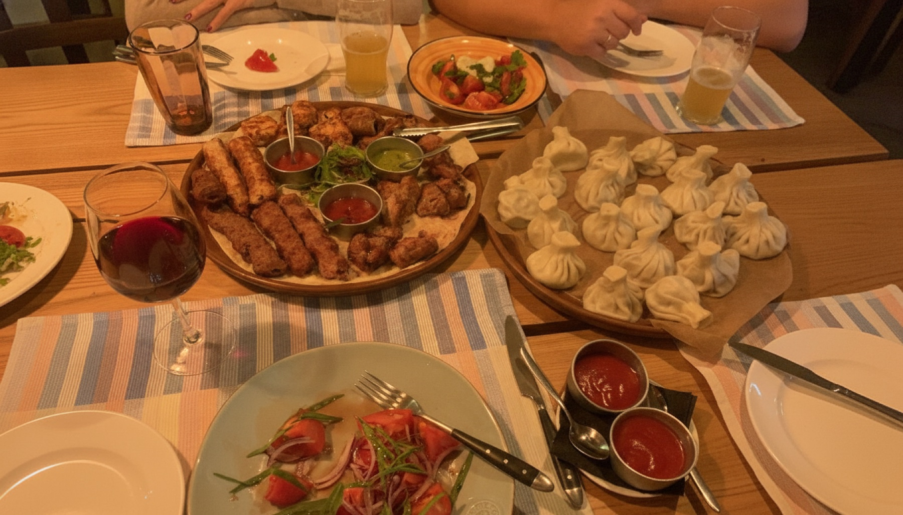
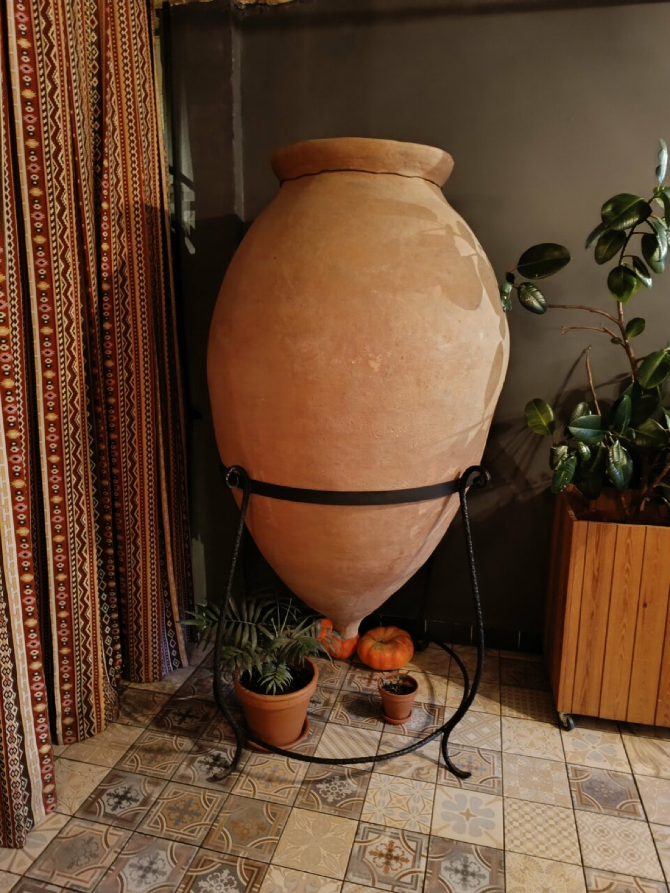
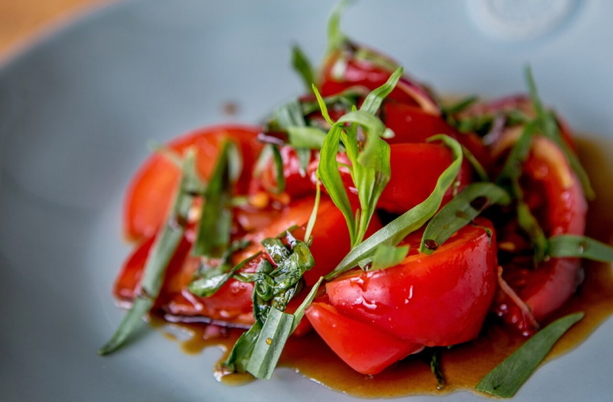
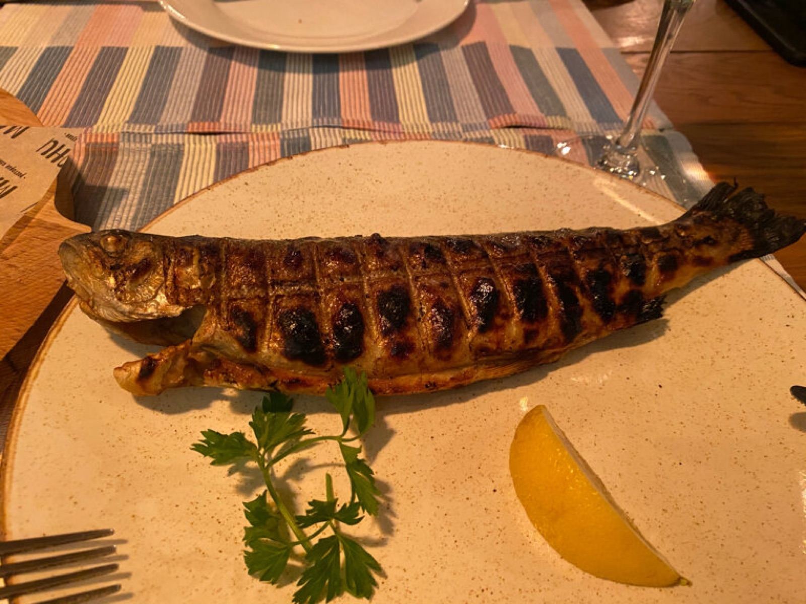

«Мацони» придумали как большое семейное застолье, которое не заканчивается: длинные столы, охапки зелени, мясо с углей и хлеб, который не успевает остыть. Так в Анапе, на улице Ленина, появился грузинский дом, куда возвращаются каждый отпуск.
Мы верим, что настоящая кавказская кухня — это не «блюда», а гостеприимство. Поэтому здесь наливают щедро, подают горячим и никогда не торопят.


Наш тандыр — настоящий, глиняный, и он работает каждый день. Лепёшки прижимаются к раскалённой стенке и через минуты приезжают на стол, дыша жаром. Хачапури, кубдари, хлеб к харчо — всё отсюда, из живого огня.
Попросите столик поближе — пекаря у тандыра можно смотреть как спектакль.


«Рецептов мы не сокращаем: если соус баже — то на настоящих орехах, если харчо — то на долгом бульоне»
кухня Мацони